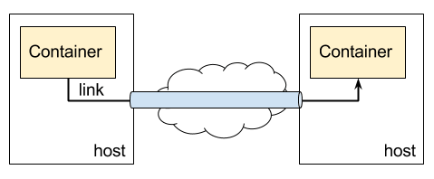

Yet another Ambassador pattern over SSH.

Install
You can pull a built container.
$ docker pull jkawamoto/ambassadors
If you are running on Raspberry Pi, you can pull it instead.
$ docker pull jkawamoto/rpi-ambassadors
Usage
$ docker run -dt jkawamoto/ambassadors (server|client|tunnel) [-v]
Options:
-v Verbose mode for debugging.
AmbassadorS has three modes; server, client, and tunnel. Those modes are associated as follows.
(a container) ---> (AmbassadorS client) ---> (AmbassadorS tunnel)
== ssh ==> (AmbassadorS server) ---> (service containers)
You need one server-mode container on a host which has containers to be linked, i.e. service containers, and one tunnel-mode container on each “client” host. You also need client-mode containers for every linking container.
Example
Suppose you have MySQL and MongoDB containers on host A, and a container on host B wants to link them, you firstly need to run a server-mode container linking the MySQL and MongoDB containers on host A.
$ docker run -d --name ambassadors_server \
-v ~/.ssh/:/data/ -p 10022:22 \
--link mongo:mongo --link mysql:mysql \
jkawamoto/ambassadors server
The server-mode container requires authorized_keys in /data/ and to expose port 22 for sshd.
In this example, authorized_keys of host A will be used from the server-mode container.
The server-mode container also needs to link service containers.
In this case, it links to containers named mongo and mysql.
On host B, you need to run a tunnel-mode container.
$ docker run -dt --name ambassadors_tunnel \
-v ~/.ssh:/root/.ssh -e PORT=10022 -e HOST=<host a> \
jkawamoto/ambassadors tunnel
The environment variable HOST is the address for host A and PORT is specified the port number of sshd.
The tunnel-mode container requires a private key of which the related public key id_rsa is included in the authorized_keys put on the server-mode container.
The private key needs to be put in /root/.ssh.
In this example, id_rsa of host B will be used from the tunnel-mode container.
You also need to run client-mode containers for MySQL and MongoDB.
$ docker run -d --name mysql_ambassadors \
--link ambassadors_tunnel:tunnel --expose 3306 -e PORT=3306 \
jkawamoto/ambassadors client
$ docker run -d --name mongo_ambassadors \
--link ambassadors_tunnel:tunnel --expose 27017 -e PORT=27017 \
jkawamoto/ambassadors client
Those client-mode containers must link the tunnel-mode container with name tunnel and expose as same port as service containers expose.
In this case, the client-mode container for MySQL exposes 3306 while the mysql container exposes 3306.
Those client-mode containers also need to set environment variable PORT as the exposed port number.
Finally, you can use MySQL and MongoDB running on host A from host B.
$ docker run -d --link mysql_ambassadors:mysql --link mongo_ambassadors:mongo some-app
License
This software is released under the MIT License, see LICENSE.